Uma civilização de barro
Quase tudo o que se sabe dos sumérios veio de tijolo cru e de tabletes de argila. Esta apostila percorre o que esse material permite contar, do período Uruk à queda de Ur.
A Suméria ocupava o sul da Mesopotâmia, no atual Iraque: uma planície aluvial entre o Tigre e o Eufrates, sem pedra, sem minerais e com pouca madeira. Ali surgiram, no IV milênio a.C., alguns dos primeiros centros urbanos de que há notícia. Os primeiros documentos inteligíveis da região estão em sumério, e a escrita que os registrou nasceu como contabilidade.
A apostila segue essa história em cinco capítulos: a terra, a gente, a cidade, a escrita e os reis. O corpo do texto acompanha o consenso dos especialistas. Perto do fim, uma seção reúne o que continua em disputa, da origem dos sumérios à autoria dos hinos de Enheduanna, e uma linha do tempo resume os marcos do tema.
A Terra Sem Pedra
Uma planície sem pedra e sem metal, onde a água chegava na hora errada e quase tudo precisava vir de fora.
Entre dois rios
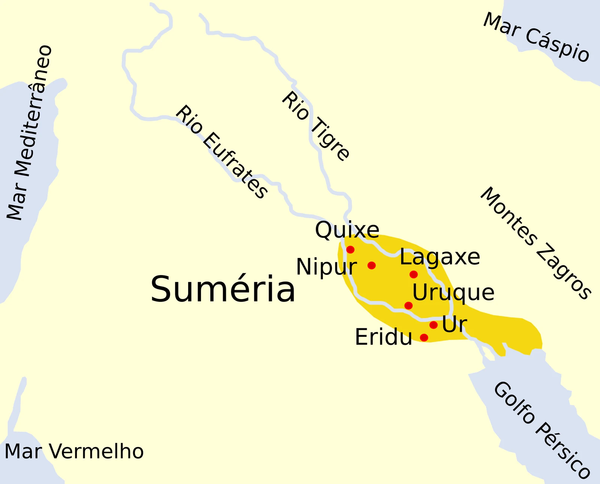
A Suméria é a metade sul da Mesopotâmia: cerca de 10 mil milhas quadradas de planície aluvial, do norte de Bagdá até o Golfo Pérsico, pouco mais que o estado americano de Massachusetts. O clima é quente e seco, e o solo, sem trabalho humano, é árido. O terreno, plano e de formação fluvial, não tem pedra nem minerais e quase não tem madeira, a não ser os caniços gigantes dos pântanos.
O Tigre e o Eufrates descem das montanhas da Armênia, alimentados por afluentes que, num ponto, correm a apenas 15 milhas uns dos outros. O Eufrates é mais lento e aceita navegação. O Tigre é rápido e banha as cidades do norte, como Nínive, Calah e Assur.
Irrigar, drenar, recomeçar
A cheia anual vem em abril e maio, quando derrete a neve da Armênia. Chega tarde demais para o cultivo de cereais, o que obrigou à construção de diques, reservatórios e canais. A evaporação rápida no calor tornava salinos os solos irrigados, e a salinização progressiva exigia mudar os campos de lugar a intervalos variáveis. A lama do Eufrates, menos fértil que a do Nilo, ainda se acumulava e entupia os canais.
Para Samuel Noah Kramer, esse trabalho foi um dos motores da unificação política. Os canais dependiam de acordos entre cidades e a água precisava ser dividida, o que pedia um poder maior que o do proprietário individual.
Três fronteiras e um golfo
Três fronteiras pesaram sobre a Suméria. A leste, as montanhas do Zagros davam passagem a metais e madeira, e também a povos que desciam para pilhar. A oeste, do deserto, vinham ciclos de infiltração de pastores semitas. A sudeste, o Golfo Pérsico abria o caminho do mar.
A terra pobre em minerais, madeira e pedra dependia do comércio. Da Anatólia vinham ouro e prata; do Zagros, cobre; do Afeganistão, lápis-lazúli. Pelo golfo chegava-se a Dilmun, Magan e Meluhha, cuja identificação ainda se debate. No século XXV a.C., Ur-Nanshe de Lagash já registrava que os navios de Dilmun lhe traziam madeira.
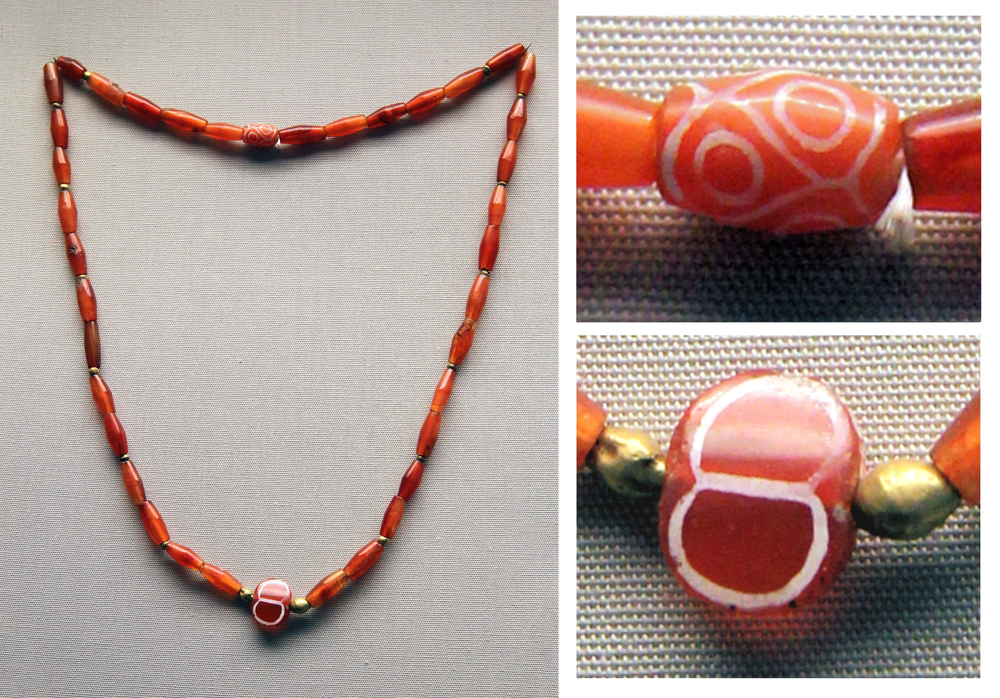
A Gente Que Chegou Depois
Quem vivia no vale antes dos sumérios, quando eles chegaram e por que a pergunta continua sem resposta firme.
A pista linguística
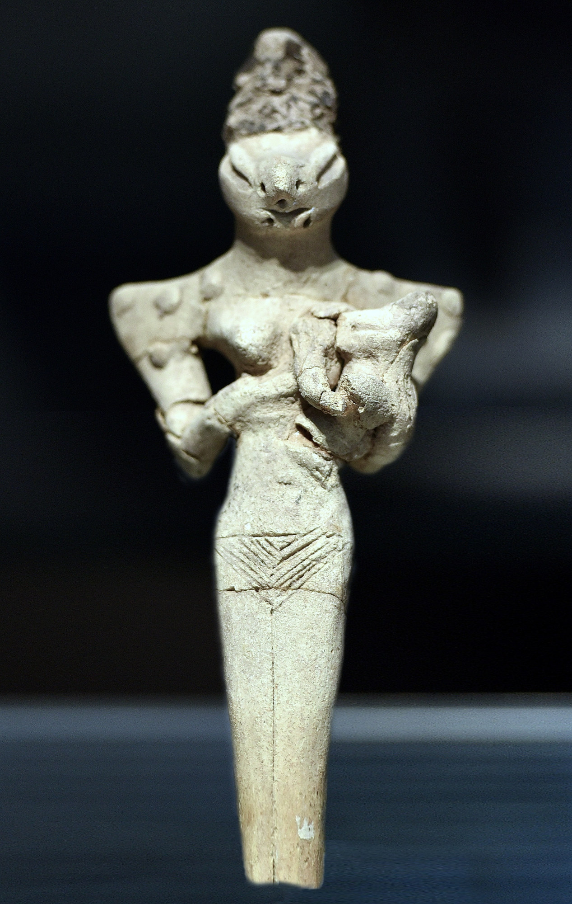
Os sumérios não foram os primeiros a ocupar o vale. A pista é linguística. Os nomes dos rios, Idiglat (Tigre) e Buranun (Eufrates), e os de cidades como Eridu, Ur, Larsa, Isin, Adab, Lagash, Nippur e Kish não têm etimologia suméria satisfatória, assim como "Mississippi" não é palavra inglesa.
Em 1944, o assiriólogo Benno Landsberger analisou palavras dissilábicas que pareciam sumérias e mostrou que não eram: engar (lavrador), udul (pastor), apin (arado), tibira (metalurgista), simug (ferreiro), pahar (ceramista), shidim (pedreiro), damgar (mercador). Essas técnicas teriam chegado ao vale com um povo anterior.
Landsberger chamou esse povo de Proto-Eufrateanos. Os arqueólogos falam em ubaidianos, por causa de Tell al-'Ubaid, perto de Ur, onde a cultura foi reconhecida primeiro. Em Ur, as primeiras casas, sobre o solo virgem, eram cabanas de caniço. Já havia cobre, cerâmica pintada e selos de carimbo, mas ainda não havia escrita nem arquitetura monumental.
Uma língua sem parentes
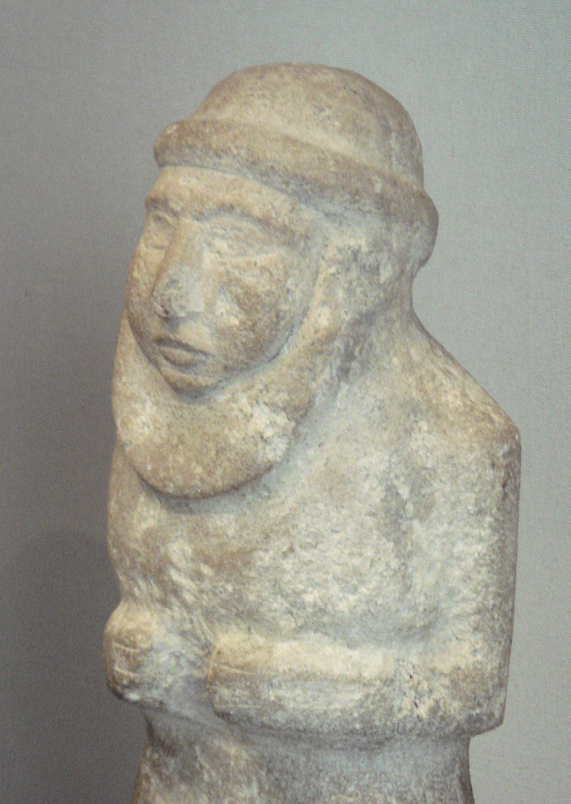
A origem dos sumérios não está resolvida. A língua é aglutinante e isolada: "a afiliação linguística do sumério ainda é completamente obscura", escreveu A. Leo Oppenheim. Kramer notou nela um leve ar de ural-altaico, e nos ciclos épicos de Enmerkar e Lugalbanda os reis de Uruk lidam com Aratta, cidade distante na direção do Cáspio. É pouco para concluir alguma coisa.
Em 1932, Henri Frankfort propôs o contrário da tese do povo anterior: os ubaidianos já seriam os sumérios, vindos do leste, das montanhas iranianas. O argumento central era iconográfico. Figurinhas masculinas do período, achadas em Uruk, mostram a barba longa, o lábio superior raspado e o coque de cabelo dos homens figurados nos monumentos posteriores.
A posição de Kramer, mais aceita, separa os dois povos. Os sumérios teriam chegado na segunda metade do IV milênio a.C., depois dos ubaidianos e de uma camada semítica, e sua língua teria se tornado aos poucos a fala predominante da terra.
Oppenheim criticou a própria pergunta. Para ele, a civilização mesopotâmica nasceu em camadas, por fusões sucessivas, e tentar isolar o momento da chegada dos sumérios é anacrônico.
Semitas, elamitas, amorreus
Os sumérios sempre conviveram com outros povos. Pastores semitas entravam pelo Eufrates em levas sucessivas, e de uma dessas infiltrações sairia a dinastia de Sargão. A leste ficavam os elamitas. No fim do III milênio, a pressão dos amorreus pesou sobre a última dinastia de Ur. A Mesopotâmia que os textos mostram nunca foi homogênea.
A Cidade
Uruk, o alcance de sua cultura, a forma que a cidade-Estado tomou no III milênio e os deuses de cada cidade.
Uruk, quarenta mil habitantes
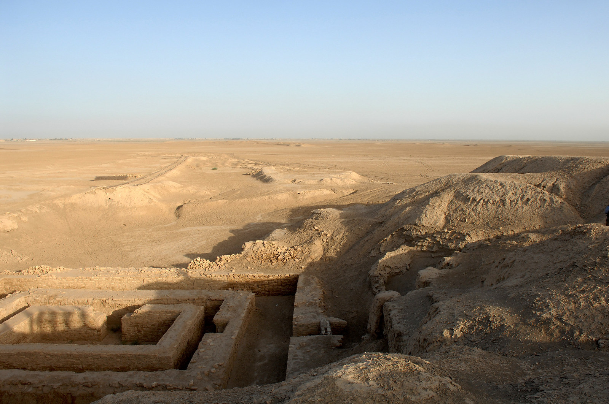
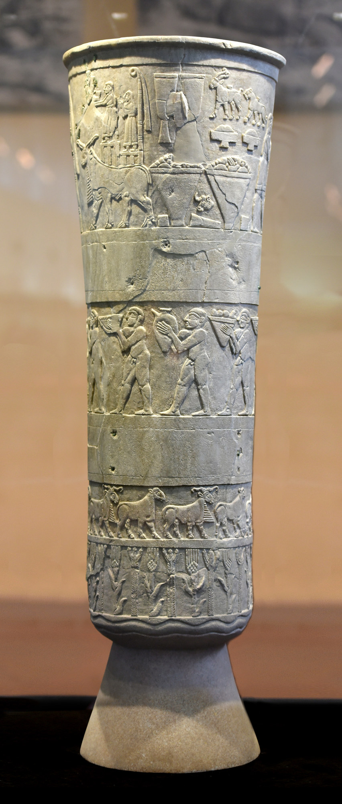
No período Uruk (c. 4100-3100 a.C.), o assentamento de Uruk, no sul da Babilônia, cresceu até reunir dezenas de milhares de pessoas. O distrito público do Eanna é o testemunho mais claro do excedente que sustentava essa concentração.
Segundo Cooper e Molina, a estrutura econômica, social e política cresceu em complexidade nesse período, e as técnicas de contabilidade evoluíram para o sistema cuneiforme, atestado pela primeira vez nos tabletes do nível IVa da sequência do Eanna, por volta de 3200-3100 a.C.
As escavações alemãs, retomadas em 1928 sob Julius Jordan, expuseram em Uruk uma sucessão de períodos de construção, com tijolos do Dinástico Antigo e do período Uruk, tabletes arcaicos, selos cilíndricos e decoração em mosaico de cones de argila.
A monumentalidade dependia de gente que não plantava. O excedente precisava ser recolhido, guardado e distribuído, e é dessa administração que sairá a escrita, assunto do próximo capítulo.
Em Warka, a antiga Uruk, conhecem-se hoje cerca de 5 mil tabletes arcaicos e fragmentos. A arquitetura que Ur-Nammu ergueria no fim do III milênio é, nas palavras do boletim do Penn Museum, uma edição ampliada dessa tradição muito mais antiga.
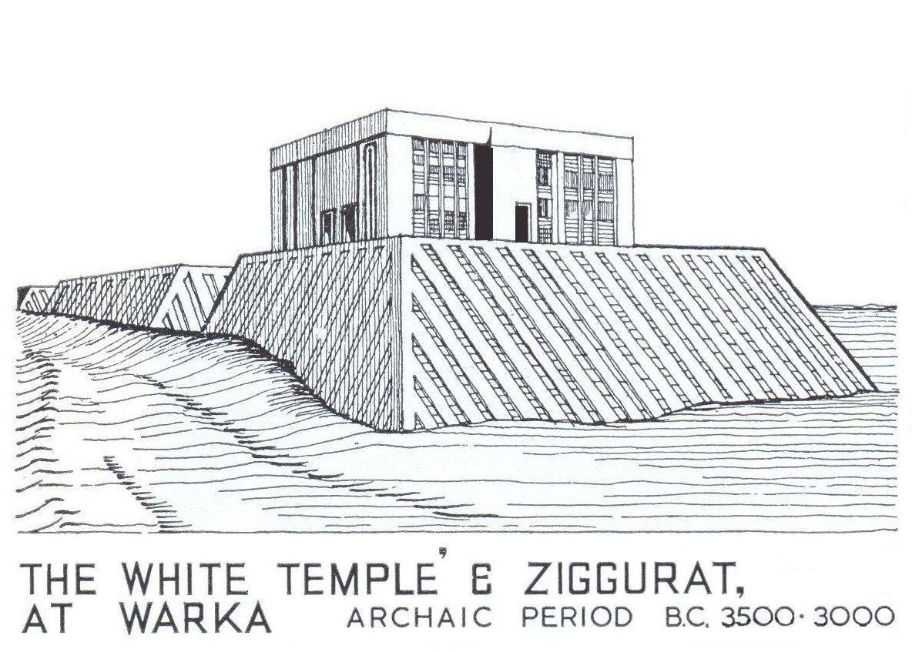
Em Uruk, a reconstrução feita por Ur-Nammu no fim do III milênio sepultou uma torre pequena e antiga. Quando a torre dele decaiu, o cume da anterior voltou a aparecer, com a planta de um pequeno santuário. É o chamado Templo Branco, pelo gesso que ainda cobria as paredes, datado na época, de forma tentativa, em cerca de 3000 a.C.
De Uruk ao Médio Eufrates
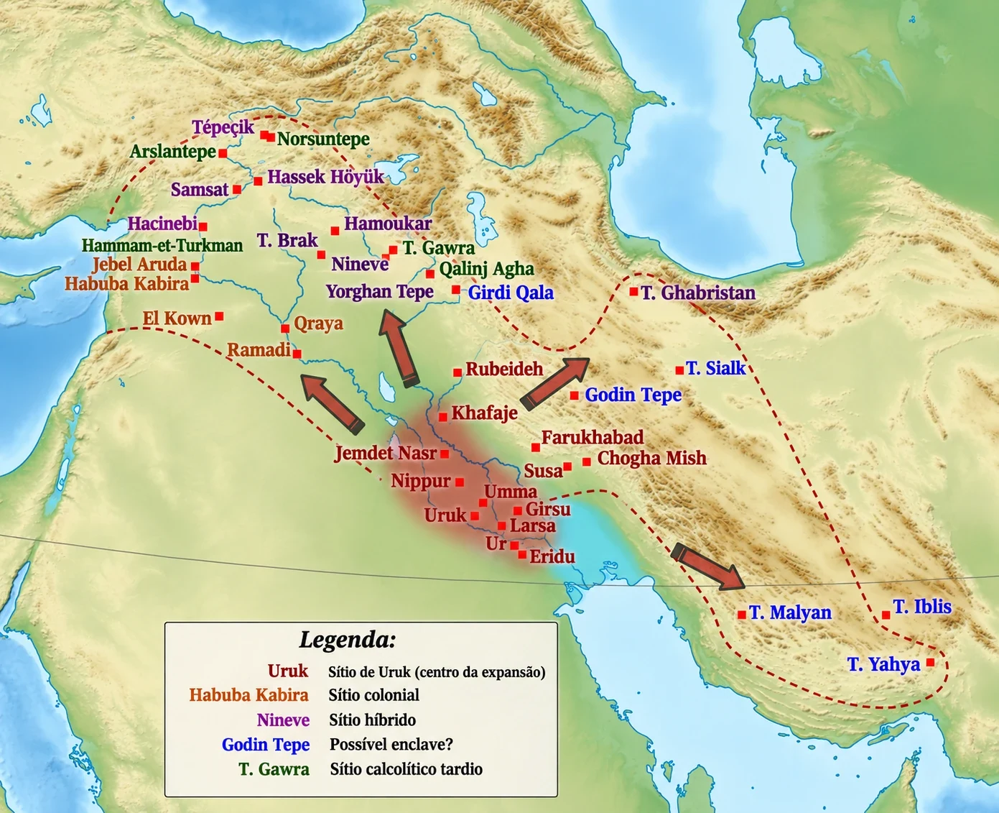
Entre 3800 e 3100 a.C., a cultura de Uruk estabeleceu contatos profundos com a Susiana, a Alta Mesopotâmia, a Anatólia oriental, o norte e o oeste da Síria e possivelmente o Egito, além de colonizar o Médio Eufrates, em sítios como Habuba Kabira.
Em 1989, Guillermo Algaze propôs ler esse movimento como um sistema-mundo, à maneira de Wallerstein: um império incipiente que extraía recursos da periferia. Mais tarde, reviu o modelo para admitir vários centros, entre eles Uruk e Nippur.
Piotr Steinkeller objetou que, em cada expansão territorial babilônica, os custos excederam os lucros do acesso direto aos recursos. Com base em evidência linguística, concluiu tratar-se de um empreendimento inteiramente comercial, comparável aos enclaves de mercadores paleoassírios, e sugeriu que o comércio contribuiu para o crescimento das cidades, como em Veneza e Amsterdã.
Por volta de 3100 a.C., a expansão colapsou. No período Jemdet Nasr, os tabletes proto-cuneiformes passaram a aparecer em Jemdet Nasr, Kish, Uqair, Larsa, Tell Asmar, Umma e Adab, e em Susa surgiu uma variante, o proto-elamita. É nessa época que a cidade-Estado se torna a unidade política básica do sul.
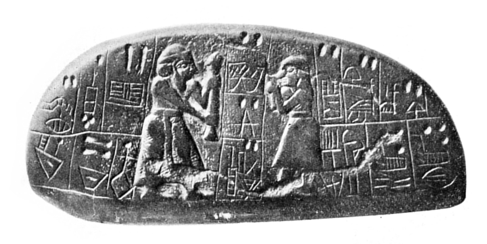
Templo, palácio, assembleia
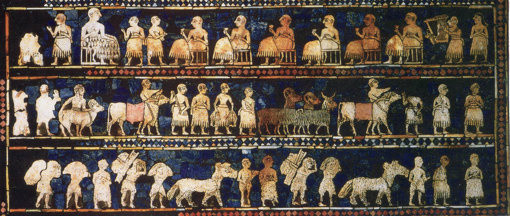
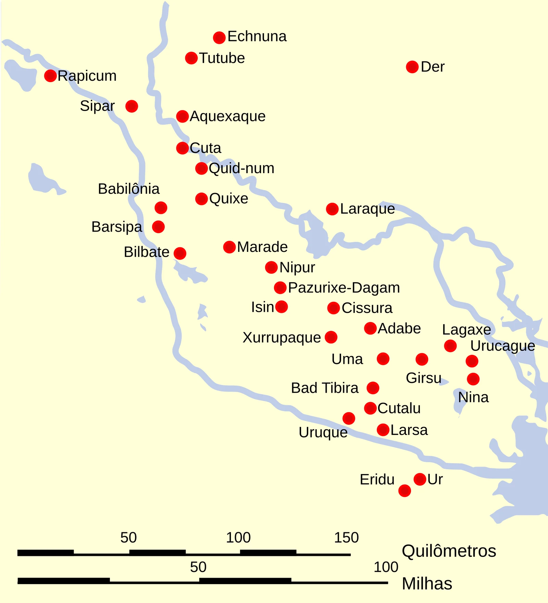
No III milênio havia cerca de uma dúzia de cidades-Estado, cada uma com muralha, subúrbios e vilas satélites. O templo era o edifício mais alto, na plataforma mais elevada. Segundo a teologia suméria, "a cidade inteira pertencia ao seu deus principal, a quem fora atribuída no dia da criação do mundo".
Na prática, para Kramer, o templo possuía só parte da terra. Anton Deimel calculara de 200 a 300 km² de terras do templo em Lagash e concluíra que era o território inteiro. I. M. Diakonoff mostrou que Lagash tinha cerca de 3.000 km². O resto pertencia à nobreza, a famílias comuns e a clientes dependentes.
No governo, Kramer descreve no início o ensi, um par entre pares, e uma assembleia de cidadãos livres, com uma câmara de anciãos e outra de homens. Com as guerras entre cidades, ganhou peso a figura militar do lugal, "grande homem", e a realeza tornou-se hereditária.
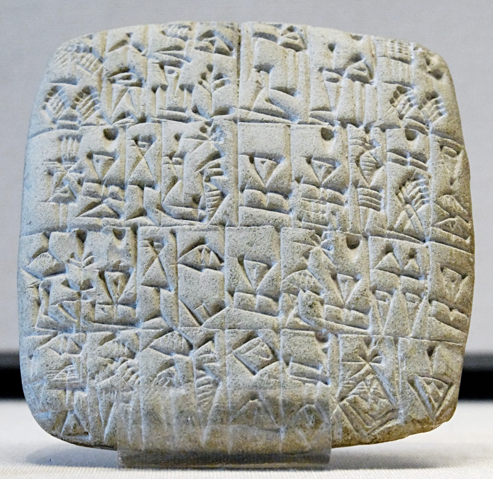
A sociedade tinha quatro camadas: nobres, comuns, clientes e escravos. Havia escravos prisioneiros de guerra, condenados e filhos vendidos por pais endividados, por até três anos. O preço médio de um escravo adulto era de 20 shekels, às vezes menos que o de um jumento. Eles podiam comerciar, pedir empréstimos e comprar a liberdade, e os filhos de escravo com pessoa livre nasciam livres.
A família ampla patriarcal continuou a ser a unidade social básica até o fim do III milênio. Os casamentos eram arranjados, com presente nupcial. As mulheres podiam possuir propriedade e comerciar, e os maridos tinham direito a um divórcio relativamente fácil.
Uma cidade, um deus
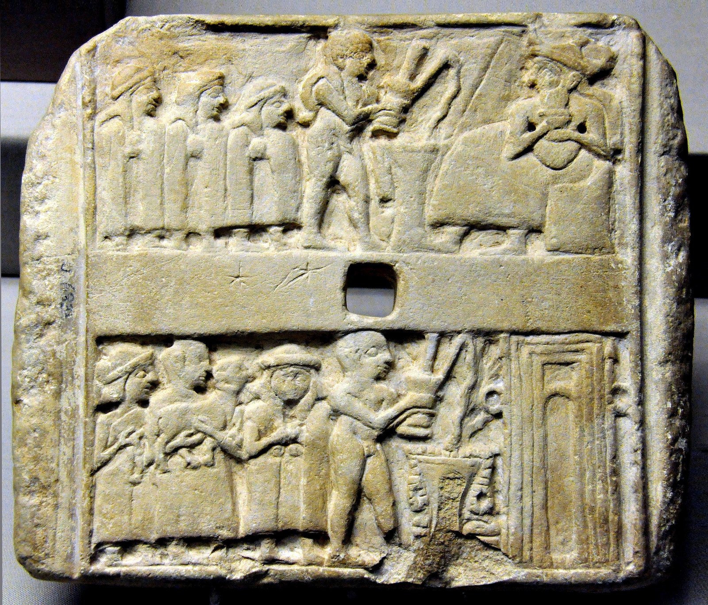
A religião suméria era politeísta e cívica. Cada cidade tinha seu deus titular, que se acreditava habitar fisicamente o templo principal: Enlil em Nippur, Nanna em Ur, Utu em Larsa e Sippar, Enki em Eridu, An e Inanna em Uruk, Ningirsu em Lagash.
O templo era também um centro social. Empregava grande parte da população e dava auxílio a órfãos, viúvas e pessoas com deficiência. Era o maior proprietário da cidade no período Uruk, posição que perdeu força ao longo do III milênio, com o crescimento do palácio.
Nas fontes disponíveis, até cerca de 2500 a.C., Enlil, o deus do ar, já aparece à frente do panteão, no lugar que An, deus do céu, teria ocupado antes. É contra o templo de Enlil em Nippur, o Ekur, que o poema da Maldição de Agade vai situar o sacrilégio de Naram-Sin.
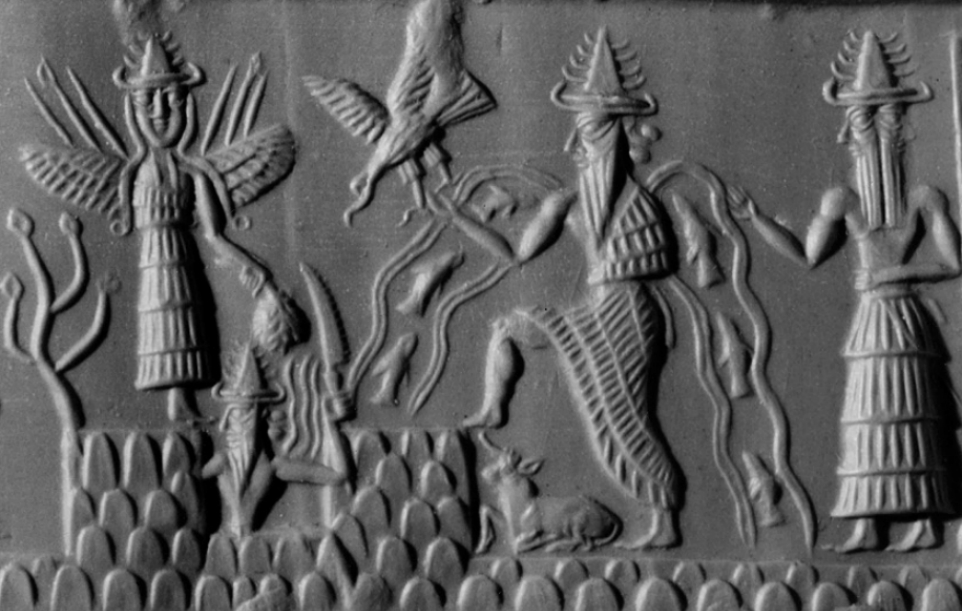
Inanna era ligada ao amor, à guerra e a Vênus; Utu, ao sol e à justiça; Enki, às águas doces e à sabedoria. Dumuzi, o pastor, protagonizava o mito do deus que morre e renasce com as estações, ainda chorado em Jerusalém no século VI a.C.
A Escrita e o Estado
O cuneiforme nasceu para contar grão, animais e gente. A administração que o criou também criou o ano de trezentos e sessenta dias.
O cuneiforme começou com números
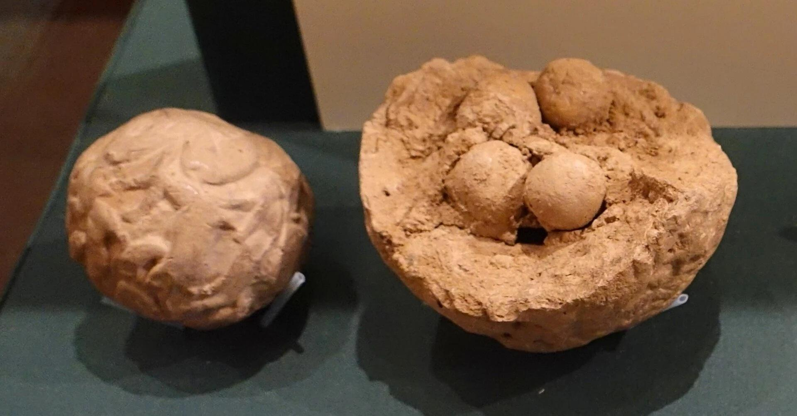
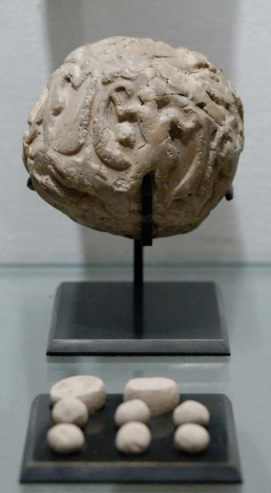
A escrita cuneiforme nasceu como contabilidade. A arqueóloga Denise Schmandt-Besserat descreveu os tokens de argila, pequenas peças geométricas usadas para contar. No período imediatamente anterior ao proto-cuneiforme, por volta de 3300 a.C., eles eram agrupados em bolas de argila seladas com cilindros, ou impressos na superfície delas. Essas marcas correspondem às notações numéricas impressas dos primeiros tabletes.
Bolas e tabletes numéricos pertencem à fase de 3400-3300 a.C. Depois vêm os textos arcaicos de Uruk. Os da fase IV só se conhecem em Uruk; os da fase III aparecem em vários sítios.
Nos mais antigos, menos de 1% é lexical, isto é, listas de sinais. Na fase III, essas listas chegam a 20%. O resto é administração: grão, animais, trabalho, têxteis, peixes.
A conservação dos tabletes dependeu do acaso. Os de Uruk, em geral, foram descartados em lixões ou reusados em paredes e pisos, e raramente estão inteiros. Os de Jemdet Nasr ficaram em estado quase perfeito porque um incêndio antigo os cozeu, o que permitiu reconstruir com mais segurança os sistemas de cálculo.
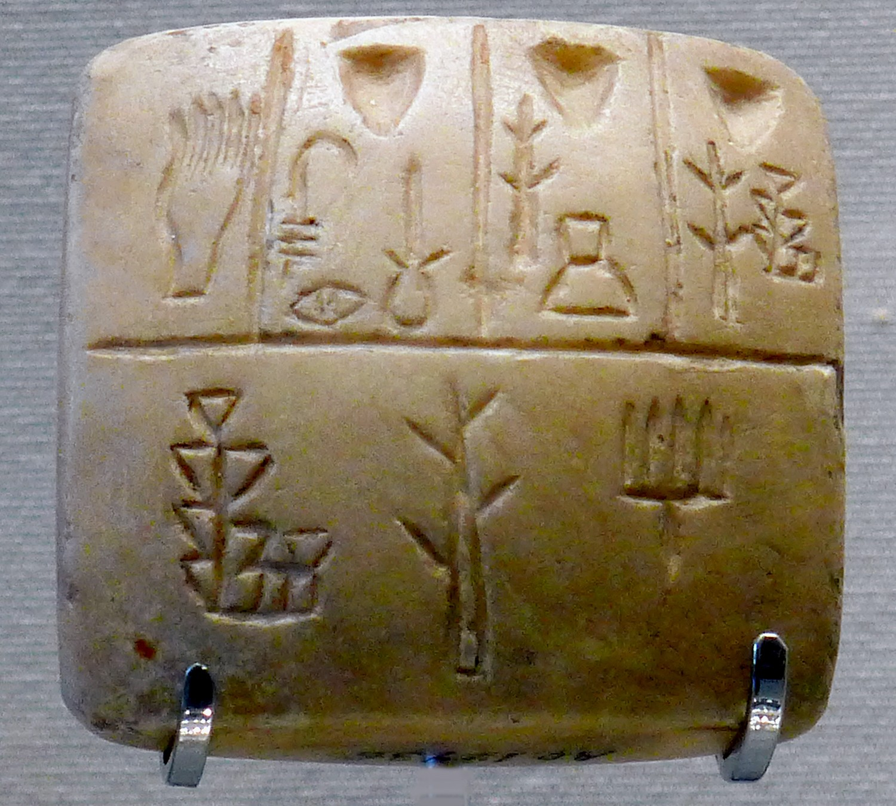
Os próprios sumérios contavam outra história. No épico Enmerkar e o Senhor de Aratta, o arauto do rei de Uruk fica pesado de boca e não consegue repetir a mensagem. O rei então inscreve as palavras em tabletes de argila. O relato é mítico, mas registra a ideia suméria de que a escrita veio resolver um problema prático.
Os numerais dos tabletes arcaicos eram impressos com a ponta de dois estiletes redondos. Oppenheim admite ainda a possibilidade de que os sumérios tenham adaptado um sistema de escrita já existente, de uma civilização mais antiga, hoje perdida.
Doze meses de trinta dias
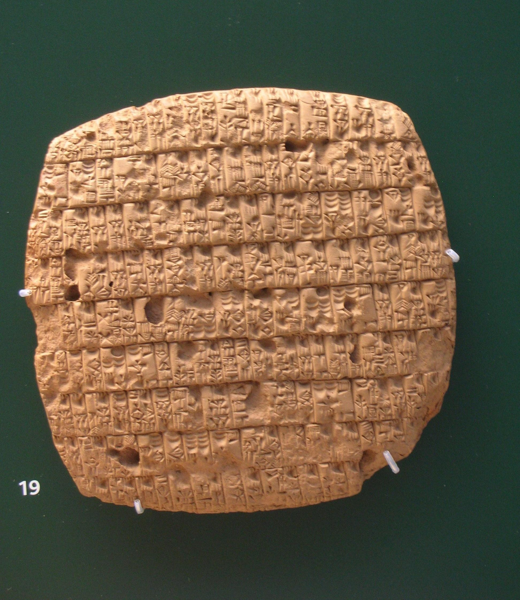
Vários sistemas de contagem conviviam, cada um para um tipo de objeto. O sexagesimal, de base 60 com fator auxiliar 10, contava objetos discretos: pessoas, animais, peixes, implementos. O bissexagesimal contava produtos de grão e queijo, coisas que parecem pertencer a um sistema de rações. Outro media a cevada por capacidade, e um sistema à parte contava o tempo.
Textos arcaicos de Uruk já mostram um ano artificial de 12 meses de 30 dias, imposto ao ciclo natural, em contas de rações. Do sexagesimal vêm, segundo Kramer, os 60 minutos, os 60 segundos e os 360 graus. O sistema não tinha zero, e o valor dos sinais dependia da posição.
A bevelled-rim bowl, tigela rústica de borda biselada, é uma das peças características do período Uruk. Na contabilidade, ela liga a cerâmica ao trabalho: o escriba media o sustento de quem trabalhava por dia e por mês, em unidades regulares.
Pessoas e animais nas mesmas contas
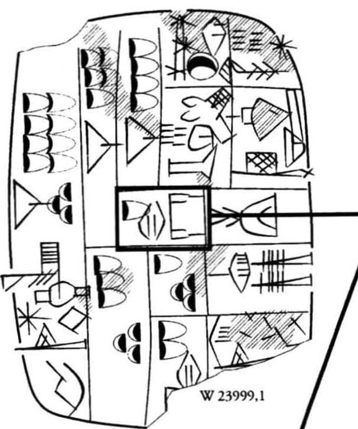
Entre as contas mais perturbadoras do período arcaico estão as de "rebanhos" humanos. Nos textos de Jemdet Nasr MSVO 1: 212-214, 27 indivíduos aparecem com os sinais SAL+KUR, SAG+MA e ERIN2. Para Englund, eram "provavelmente escravos tomados como pilhagem em ações violentas contra vizinhos babilônicos". Outro texto, W 9827, registra ao menos 211.
Conhecem-se cerca de 50 contas desse tipo, no mesmo formato usado para porcos e bovinos. Os sinais SAL e KUR, que designam homens e mulheres, marcam também o sexo dos filhotes. Os jovens, humanos ou animais, recebem o sinal N8, que pode indicar metade da ração do adulto.
Nos tabletes proto-elamitas, o sistema sexagesimal qualificava humanos de alto status, enquanto um sistema decimal qualificava animais e humanos de baixo status. Em Uruk, todos os humanos entravam no sexagesimal, vestígio de uma taxonomia de dois níveis em que trabalhadores domésticos ficavam ao lado dos animais domésticos.
Os Reis, os Deuses, as Palavras
Dos túmulos reais de Ur ao fim da III dinastia, com a primeira autora conhecida pelo nome no meio do caminho.
Os túmulos reais de Ur
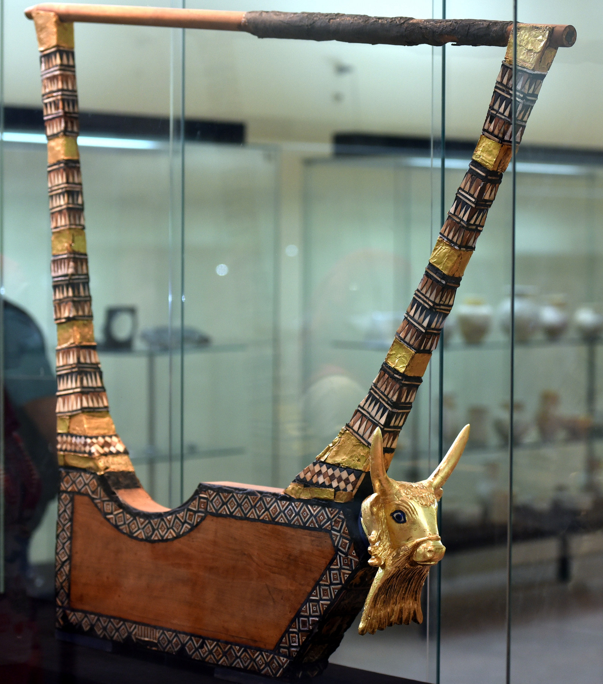
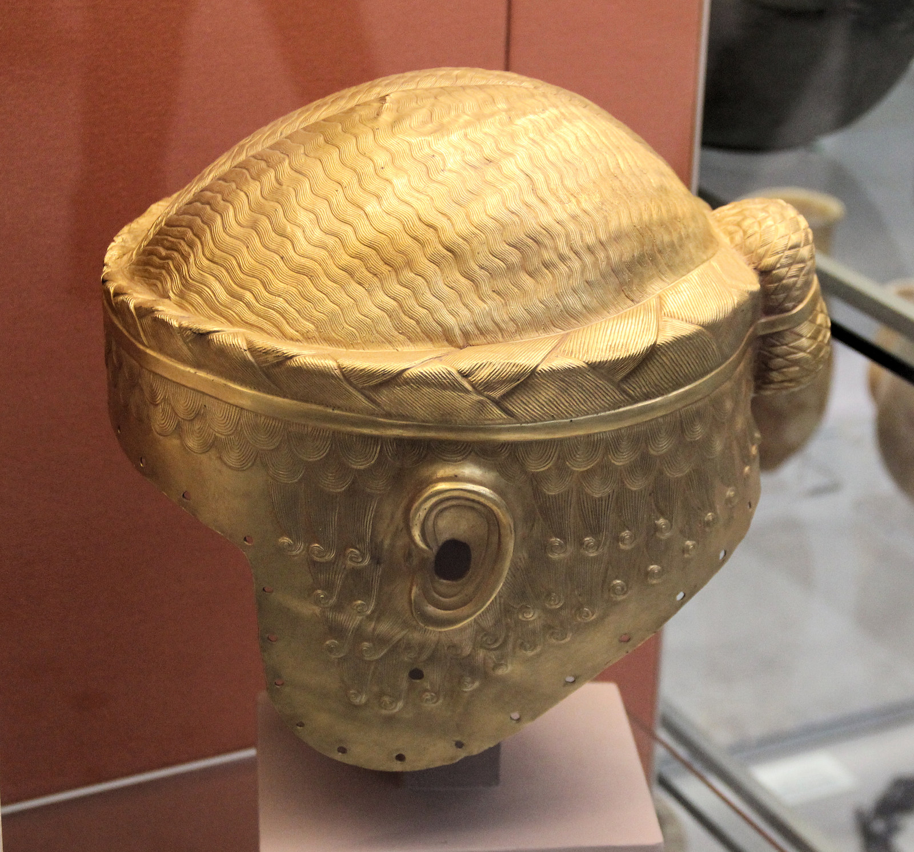
Ur foi escavada de 1922 a 1934 por Leonard Woolley. Os túmulos reais da cidade, de cerca de 2500 a.C., tornaram-se o achado mais conhecido da arqueologia suméria.
Para Kramer, esses enterros múltiplos indicam com razoável certeza que os primeiros governantes da Suméria iam para o túmulo acompanhados de seus bens mais preciosos e de um séquito humano.
Entre os achados estão harpas e liras, sinal do lugar da música no templo e na corte, e selos com os nomes de Meskalamdug e Akalamdug, reis que não constam na Lista Real.
Os textos quase não ajudam, porque a maior parte da literatura disponível foi composta por volta de 2000 a.C. A exceção seria um tablete sobre a morte de Gilgamesh, com presentes aos deuses do mundo dos mortos por todos os que "jaziam com ele" no palácio: esposa, filho, concubina, músico e criados.
Lagash e Umma, cinco gerações de guerra
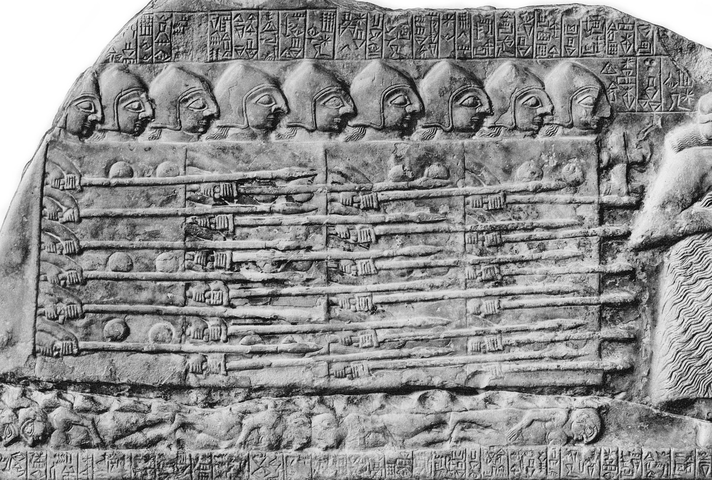
No Dinástico Antigo (2900-2300 a.C.), a Suméria foi um mosaico de cidades-Estado. Lagash, no sudeste, não entra na Lista Real, mas deixou centenas de inscrições votivas e é a cidade mais bem documentada do período. Com a vizinha Umma, disputou por gerações o Guedinna, um campo fértil na fronteira.
Mesilim, rei de Kish, arbitrou a fronteira e mandou erigir uma estela. Ush, ensi de Umma, rompeu o acordo. Eannatum de Lagash derrotou os ummaitas, levantou a Estela dos Abutres e tomou o título de "rei de Kish".
Entemena, sobrinho de Eannatum, venceu Ur-Lumma, de novo em Umma. Il, de Hallab, usurpou o trono ummaita, e terceiros voltaram a arbitrar.
Na geração seguinte, Lugalzagesi, ensi de Umma, destruiu Lagash e passou a se intitular rei de Uruk e rei da Terra. Disse ter estendido seu domínio do Mar Baixo ao Mar Alto, do Golfo Pérsico ao Mediterrâneo.
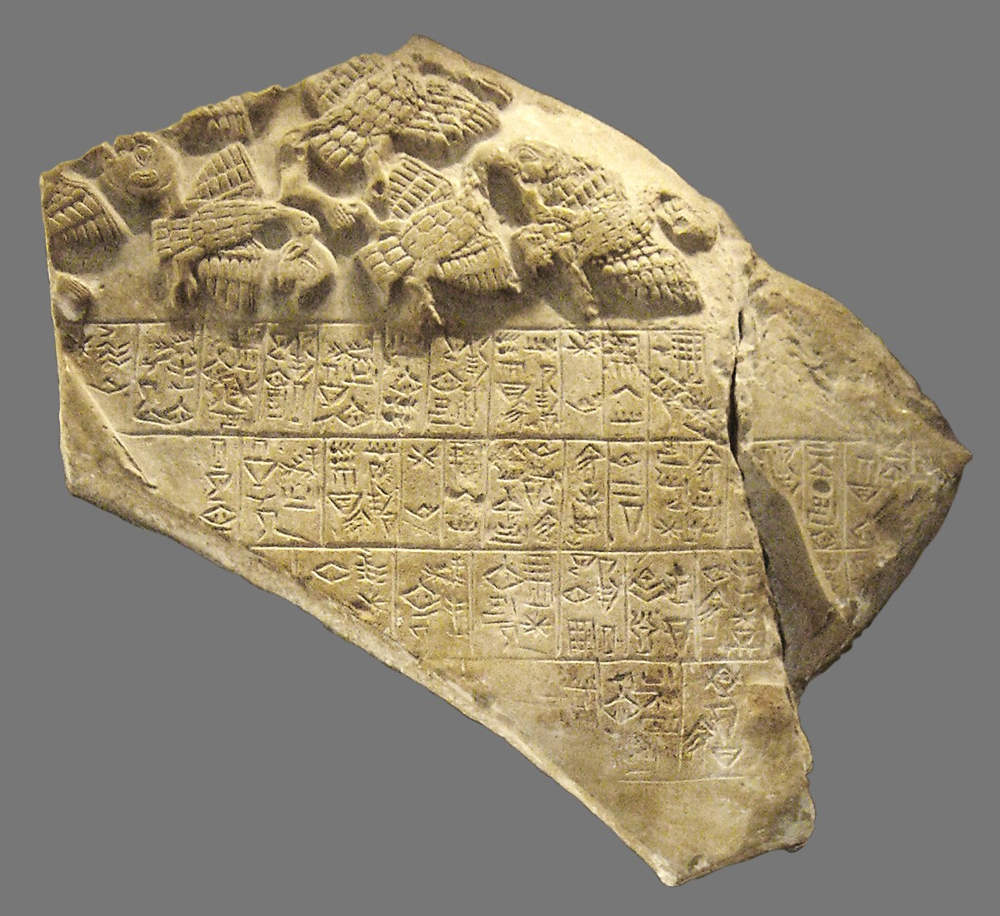
Boa parte do que se sabe dessa rivalidade vem dos próprios governantes. A Estela dos Abutres registra um tratado entre as duas cidades. Há ainda os sumários militares de Eannatum, o relato de Entemena sobre a guerra e o louvor de Lugalzagesi ao próprio reinado.
Cerca de mil inscrições votivas e dedicatórias, em pedra, argila, tijolos, vasos e estelas, sustentam a história política do período, sempre do ponto de vista de quem mandou escrever.
Os nomes da casa de Ur-Nanshe aparecem nessas inscrições: Akurgal, Eannatum, Enannatum I, Entemena, Enannatum II. Depois deles vieram Enentarzi, Lugalanda e Urukagina, o último antes da queda de Lagash.
Urukagina e a palavra amargi
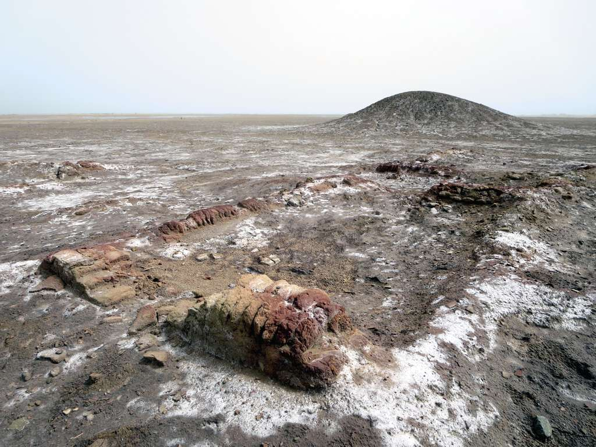
Pouco antes do fim de Lagash como potência, por volta de 2350 a.C., o ensi Urukagina promulgou o que é tradicionalmente considerado a mais antiga reforma social da história. Três versões do texto descrevem o Estado como era antes: o ensi e seus funcionários cobravam taxas de divórcio, de perfumaria e de enterro, e os pobres iam para a cadeia por dívida.
E descrevem como ficou depois. Urukagina baniu as apropriações, anistiou os presos por dívida, protegeu artesãos e cegos e devolveu ao templo o que o ensi tomara para si: "de uma ponta da terra à outra, não havia coletores de impostos".
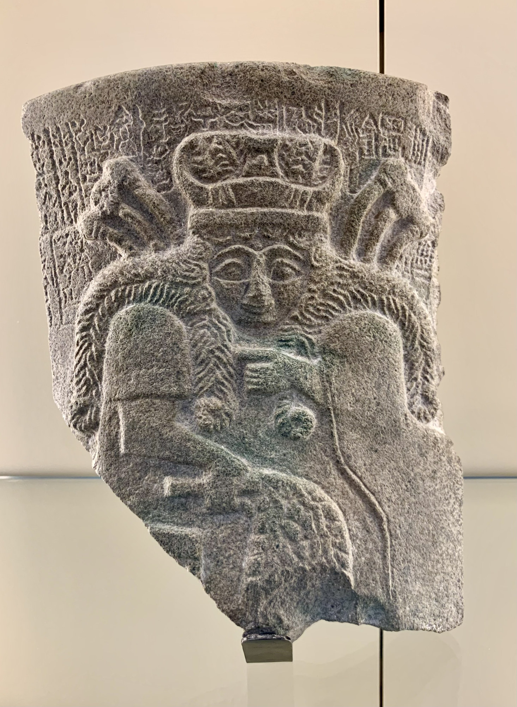
É nesse texto que aparece pela primeira vez a palavra "liberdade" no registro escrito: amargi, literalmente "retorno à mãe". Não se sabe por que essa figura veio a significar liberdade.
A reforma teve vida breve. Urukagina caiu com Lagash, invadida por Lugalzagesi, e um documento lagashita registrou o sacrilégio contra os templos de Ningirsu. O texto termina entregando o vencedor à própria divindade dele: "Que Nidaba, a (própria) deusa de Lugalzagesi, o faça carregar esses pecados". Nidaba é outra grafia de Nisaba.
Lugalzagesi seguiria adiante por cerca de duas décadas de vitórias, até encontrar Sargão.
Sargão e o primeiro império mesopotâmico
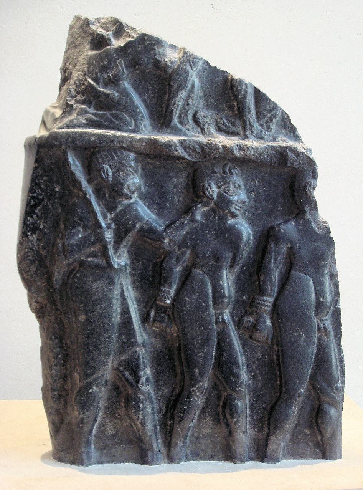
Sargão, semita, começou como copeiro de Ur-Zababa, rei de Kish, e assumiu o poder por volta de 2300 a.C. Uma lenda posterior conta que foi recolhido do rio pelo plantador Aqqi. Para Thorkild Jacobsen, origens humildes como essa nunca apareceriam em inscrições reais: vêm do gênero épico-histórico.
Ele atacou Uruk, derrotou Lugalzagesi e levou-o em jugo à porta de Nippur. Submeteu Ur, Lagash, Umma, Mari, Ebla e Elam, e alcançou o "Cedro" e a "Montanha da Prata", o Amanus e o Tauros. Fundou Agade, que segundo Kramer logo se tornou uma das cidades mais prósperas do mundo antigo. "5.400 homens comem pão diariamente diante dele", gabava-se. Nos portos de Agade atracavam navios de Dilmun, Magan e Meluhha.
François Hartog, estudando os historiadores gregos, lembra que a escrita da história começa na Mesopotâmia, com a monarquia de Agade, a primeira a unificar o país e a recorrer a escribas para escrever sua história.
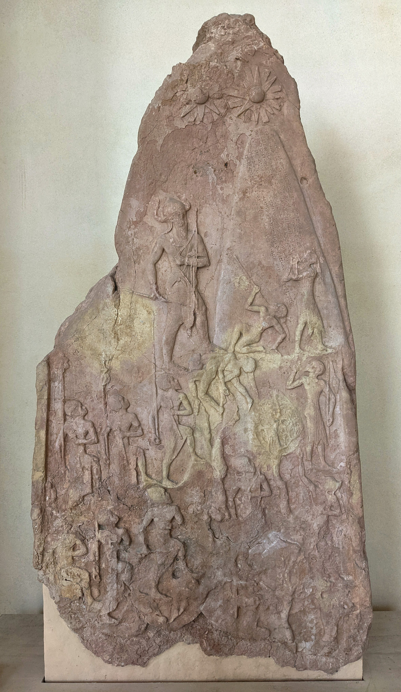
Os filhos de Sargão, Rimush e Manishtusu, reprimiram rebeliões no sul. Naram-Sin, seu neto, levou Agade ao auge: tomou o título de "rei dos quatro quartos", fez-se deificar como "o deus de Agade", derrotou os Lullubi no Zagros e submeteu Elam.
A estela que celebra a vitória sobre os Lullubi mostra o rei maior que todos, no alto da montanha, usando o capacete com chifres.
Com Sarkalisarri, o império declinou, pressionado por elamitas, amorreus e gutianos. A queda entrou para a memória suméria como castigo, num poema escrito algumas gerações depois.
O poema explica o colapso pelo sacrilégio de Naram-Sin contra o Ekur, o templo de Enlil em Nippur. Enfurecido, Enlil traz das montanhas os gutianos, "um povo que não aceita controles", que "cobriu a terra como gafanhotos".
As comunicações cessam e a fome se espalha: meio sila de óleo ou de grão chega a custar um cordeiro. Oito deuses amaldiçoam Agade para que fique desolada para sempre. O sítio da cidade ainda não foi identificado.
Enheduanna, a sacerdotisa de Ur
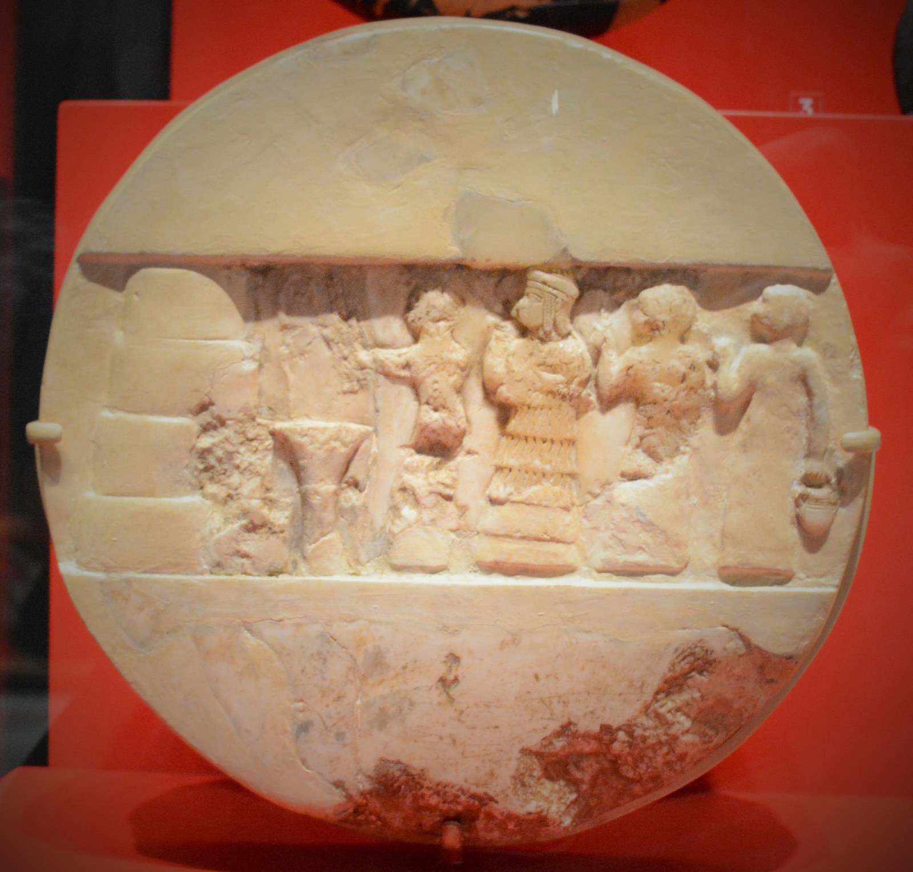
Sargão nomeou a filha sacerdotisa-en do templo de Nanna, o deus-lua, em Ur, o cargo mais alto do culto. Ela tomou um nome sumério, Enheduanna, "senhora que adorna o paraíso". Para Alhena Gadotti, a nomeação foi uma medida para legitimar o poder em terras recém-anexadas. A partir dela, as sacerdotisas-en de Nanna passaram a ser filhas do governante.
Essas sacerdotisas provavelmente viviam isoladas no gippar, residência dentro do templo. Com exceção do rei, são os únicos indivíduos representados sentados num trono com insígnias.
Três obras lhe são atribuídas: dois hinos a Inanna, Nin me sara e inin sa gura, e o Hino aos templos sumérios. A maior parte da literatura suméria é anônima, e só a partir da metade do II milênio os escribas passam a se identificar, em trabalho de cópia. Enheduanna é conhecida como a primeira pessoa a reivindicar a autoria de um texto, fato que não pode ser confirmado.
No Nin me sara, o rebelde Lugal-Ane toma o poder em Ur e expulsa Enheduanna do templo de Nanna. Ela se dirige a Inanna, porque Nanna não a atendeu. Inanna, sincretizada com a Ishtar semítica, é na literatura suméria a subjugadora de rebeldes. O texto está em primeira pessoa, algo raro na literatura mesopotâmica da Idade do Bronze, e termina com a imagem do parto para o ato de compor.
A voz autoral reaparece em outro texto. No fim do Hino aos templos lê-se: "A tecelã deste tablete foi Enheduanna", seguido de "Meu rei! Nasceu algo que não havia nascido antes". Os manuscritos conhecidos são dos séculos XXI e XVIII a.C., posteriores à vida dela, e por isso a autoria segue em discussão, como mostra a seção O Que Ainda se Discute.
Gudea e Lagash depois de Agade
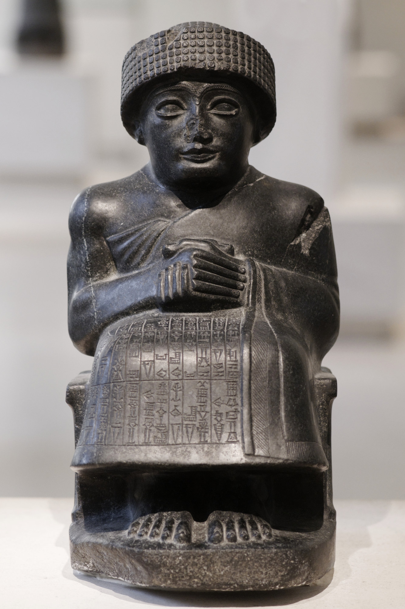
Os gutianos dominaram o sul por um tempo incerto: as estimativas vão de cerca de 40 a 100 anos. Lagash prosperou nesse intervalo. Uma nova dinastia, à qual pertenceram Ur-Bau e seu genro Gudea, floresceu no fim do domínio gutiano e chegou a coexistir com Ur-Nammu.
Gudea deixou uma inscrição cilíndrica de cerca de 1.400 linhas sobre a reconstrução do templo Eninnu. Para a obra, obteve prata do Tauros, cedros do Amanus, cobre do Zagros, diorito de Magan e madeira de Dilmun.
Suas estátuas de diorito foram descobertas em 1877 por Ernest de Sarzec, cônsul francês em Basra. Foram elas que, pela primeira vez, estabeleceram a antiguidade da arte suméria, e inspiraram as expedições seguintes a Nippur, Adab, Babilônia, Uruk e Fara. As mãos cruzadas são as do adorador.
O estilo do período é liso e "clássico", em contraste com o arcaísmo das peças de Ur-Nanshe: turbante, olhos grandes, sobrancelhas espessas, nariz reto, boca pequena e queixo redondo.
A Lista Real, uma só realeza
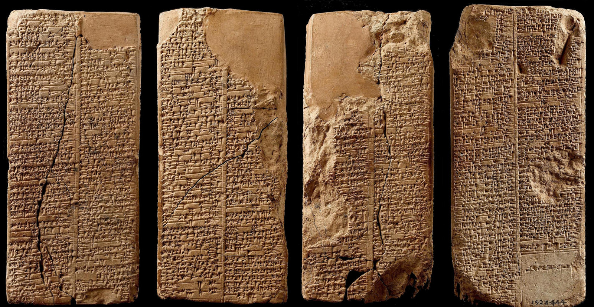
Pouco antes de 2110 a.C., Utuhegal de Uruk derrotou o gutiano Tirigan. Foi nesse reinado, mostrou Thorkild Jacobsen em 1939, que se compôs a Lista Real Suméria, que registra os reis desde o tempo em que "a realeza desceu do céu" até a dinastia de Isin.
Três indícios convergem. A linguagem do texto aponta para esse período. O termo usado para "derrotar" só aparece a partir de Gudea. E a ideologia da Lista, de um só reino cuja capital passa de cidade em cidade, é a mesma da inscrição de Utuhegal sobre a vitória.
Os defeitos são conhecidos. A Lista supõe que as dinastias se sucederam, quando a maioria foi contemporânea, e atribui 250 mil anos a oito reis antediluvianos. Ainda assim, para Kramer, dá um quadro de grande valor se usada com discernimento.
Os nomes e as durações vêm das fórmulas de data. As notas sobre Etana, Gilgamesh, Ku-Baba ou Sargão vêm de épicos e lendas. Enmebaraggesi, oitavo rei de Kish, teve a existência confirmada por uma inscrição numa taça de alabastro.
A III dinastia de Ur, o último Estado sumério
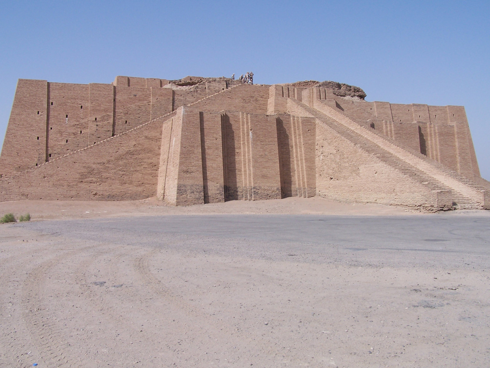
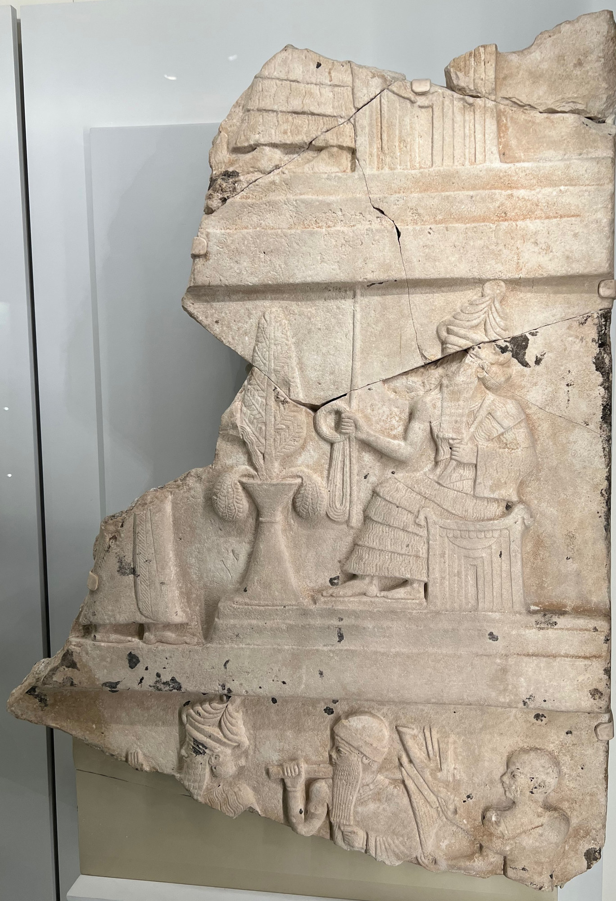
Ur-Nammu (2110-2093 a.C.), governador de Utuhegal em Ur, tomou o poder e fundou a III dinastia de Ur. Construiu ziggurats em Ur, Uruk e Nippur e promulgou o mais antigo código de leis conhecido.
O código, que sobrevive em cópia tardia, abre com o rei removendo os "agarradores" dos bois, ovelhas e jumentos dos cidadãos, fixando pesos e medidas e garantindo que "o órfão não cairá em presa do rico" e "a viúva não cairá em presa do poderoso".
As leis preservadas fixam multas em prata: 10 shekels pelo pé cortado, uma mina pelo osso quebrado, dois terços de mina pelo nariz cortado.
Shulgi (2092-2045 a.C.), seu filho, dividiu o reino em províncias centrais e periféricas, organizou um sistema redistributivo com depósitos como o de Puzrish-Dagan, deificou-se em vida e patrocinou as escolas de escribas.
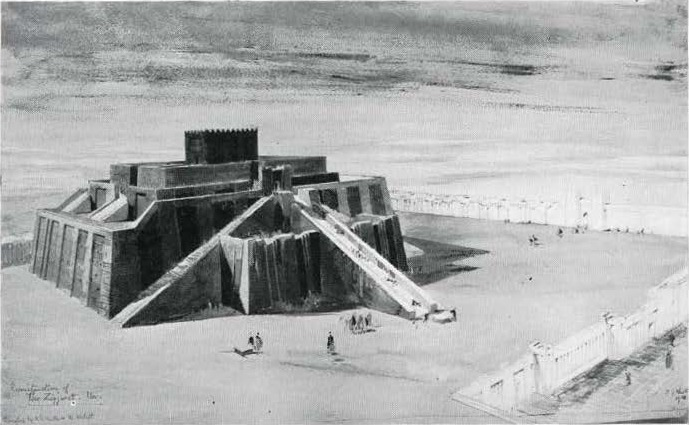
A ziggurat é uma torre de tijolo que sobe em estágios recuados, coroada por um pequeno santuário. A de Ur tinha três escadarias de cem degraus, núcleo de tijolo cru e paredes de tijolo cozido. Nabonido ainda a restaurou, mil e quinhentos anos depois.
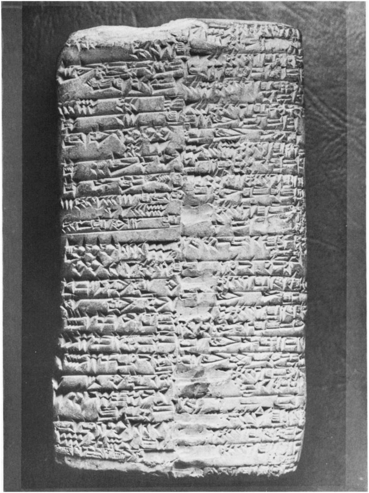
Dos cerca de 30 mil textos publicados da III dinastia de Ur, algumas dúzias mostram por dentro as unidades estatais de produção. O tablete Erlenmeyer 155 registra um débito de 20.179 dias de trabalho de um grupo de geme, trabalhadoras, contra créditos em moagem de farinha, colheita de cevada e serviço em represas.
Para Englund, as geme eram integralmente propriedade do Estado e constavam nos livros como bens à disposição dos agentes que organizavam a produção. Se a performance real ficasse abaixo do devido, o chefe do grupo ficava endividado com o Estado. O formato é o mesmo das contas de pastores de rebanhos.
Entre os créditos estão 5.986 dias em moagem, 1.130 em colheita de cevada e 140 na represa do rio de Idena. Até a folga era alocada segundo padrões.
O sistema durou pouco mais de um século. Shu-Suen (2035-2027 a.C.) construiu um grande muro contra os amorreus. Sob Ibbi-Suen (2026-2003 a.C.), as contribuições periféricas cessaram e cidades abandonaram o rei. Ishbi-Erra, enviado para comprar grão em Isin, ofereceu-se para guardá-lo lá, depois tomou o poder e fundou a dinastia de Isin. Por fim, Kindattu, rei de Anshan e Simashki, derrotou Ibbi-Suen, saqueou Ur e pôs fim à dinastia.
A língua que sobreviveu aos falantes
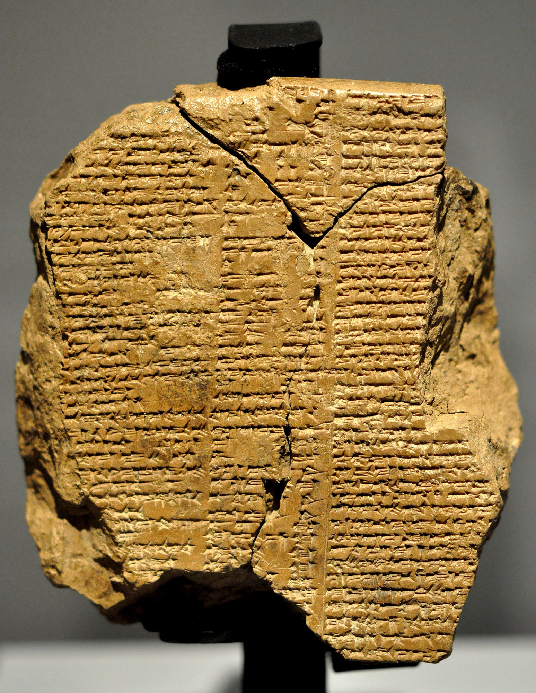
Na primeira metade do II milênio, o acádio substituiu o sumério na vida cotidiana. A língua, porém, continuou a ser ensinada como língua erudita e, em certos aspectos, sagrada. Até o reinado de Assurbanípal, no século VII a.C., escribas aprendiam equivalências entre sumério e acádio e copiavam hinos, listas e glossários.
A tradição literária também mudou de língua. O ciclo sumério de Gilgamesh foi recompilado em acádio na Epopeia de Gilgamesh babilônica. Dumuzi, o pastor-rei que morre e renasce, ainda era chorado pelas mulheres de Jerusalém no século VI a.C., e seu nome ficou no mês de Tammuz.
A escrita cuneiforme, adaptada ao acádio, ao hitita, ao hurrita e ao elamita, foi dominante no Oriente Médio por mais de dois mil anos.
Kramer atribui aos sumérios, entre outras heranças, o sistema sexagesimal e posicional, a roda de oleiro e de carro, a vela, o arco, a abóbada, a cúpula, a fundição em cobre e bronze, o cilindro-selo e o modelo da cidade-Estado. Na literatura, aponta motivos que passariam adiante: o dilúvio de Ziusudra, o paraíso de Dilmun, o deus que morre e renasce.
O Que Ainda se Discute
O que o corpo da apostila apresentou como consenso tem pontos abertos. Estes são os principais.
Não há acordo sobre quando os sumérios chegaram, nem de onde vieram. Kramer os separa dos ubaidianos, Frankfort os identificava com eles, e Oppenheim considera a pergunta mal formulada. A língua continua sem parentes conhecidos.
As datas do IV e do III milênio são incertas. A duração do domínio gutiano, por exemplo, vai de cerca de 50 anos, em Crawford, a 100 anos, no limite proposto por Steinkeller. A data de Sargão muda conforme essa conta.
Império incipiente, rede com vários centros ou empreendimento comercial: "a discussão continua", resume Englund. Em novembro de 2025, foi anunciado um edifício monumental do período Uruk em Kani Shaie, no Curdistão iraquiano, que pode indicar que a suposta periferia tinha papel próprio. A análise segue em andamento, sem publicação acadêmica.
Kramer, com Diakonoff, reduz a parte do templo. Harriet Crawford, na leitura de José Augusto Ramos, vê o templo como principal detentor de terra até o fim do Dinástico Antigo, com a propriedade privada crescendo depois, primeiro em famílias e depois em indivíduos.
Jacobsen data a composição do reinado de Utuhegal. Steinkeller publicou em 2003 um manuscrito do período Ur III, que difere das versões paleobabilônicas em várias durações de reinado. O valor das primeiras dinastias como dado histórico segue em debate.
Englund lê os tabletes como contas de escravos de pilhagem, com um "provavelmente" que marca a incerteza. Guillermo Algaze foi além, em 2001, e viu nessa categorização de pessoas ao lado de animais um estágio necessário na formação dos Estados antigos.
Sem manuscritos do tempo dela, a autoria não pode ser atribuída com certeza. Gadotti liga a atribuição ao papel político de Enheduanna na memória mesopotâmica. Sophus Helle pensa em autoria colaborativa, em que os copistas também criam a autora. Ana Clara Reis de Guimarães lembra que o Hino aos templos menciona um templo de Shulgi, posterior a ela, e portanto foi alterado.
Dilmun costuma ser identificada com o Bahrein, mas Kramer notou que o mito de Enki e Ninhursag a põe "onde o sol nasce", o que não combina com essa localização. Para Magan, ele considerava Omã e o Egito; para Meluhha, a Etiópia e o Vale do Indo.
Também não há resposta fechada sobre o papel da terra no declínio do sul. Crawford sugere a hiper-irrigação como causa possível, sem confirmação.
Linha do Tempo
Os marcos do tema, do período Ubaid à redescoberta moderna, com uma explicação curta de cada um. Alguns não aparecem no texto da apostila.
-
5500-4000 a.C.
Período Ubaid. Primeira cultura conhecida do vale, com o nome do sítio de Tell al-'Ubaid: aldeias de caniço, cerâmica pintada e cobre.
-
c. 4100-3100 a.C.
Período Uruk. Uruk, a maior cidade da Suméria, chega a cerca de 40 mil habitantes. É o começo da vida urbana no sul.
-
3800-3100 a.C.
Expansão de Uruk. A cultura de Uruk alcança a Susiana, a Anatólia oriental e a Síria, com colônias como Habuba Kabira, e depois colapsa.
-
3400-3300 a.C.
Bolas de argila. Fichas de contagem são guardadas em bolas seladas e surgem tabletes só com números. É o passo anterior à escrita.
-
3300-3100 a.C.
Textos arcaicos de Uruk. Os primeiros textos proto-cuneiformes: contas de grão, animais, trabalho e tecidos.
-
3100-2900 a.C.
Período Jemdet Nasr. Leva o nome de um sítio perto de Kish. A escrita chega a outras cidades, e a cidade-Estado vira a unidade política do sul.
-
2900-2300 a.C.
Dinástico Antigo. Cidades-Estado independentes, como Kish, Uruk, Ur, Lagash e Umma, disputam terra e supremacia.
-
c. 2600 a.C.
Gilgamesh. Rei de Uruk, situado por Kramer por volta dessa data. Deificado pouco depois, vira o herói dos épicos.
-
c. 2500 a.C.
Túmulos reais de Ur. Governantes enterrados com ouro, liras e um séquito humano, encontrados por Leonard Woolley.
-
Século XXV a.C.
Estela dos Abutres. Eannatum de Lagash celebra a vitória sobre Umma, na rivalidade mais bem documentada do período.
-
c. 2350 a.C.
Reformas de Urukagina. Em Lagash, o governante corta taxas e anistia devedores. O texto traz amargi, primeiro registro da palavra "liberdade".
-
c. 2300 a.C.
Sargão. Semita, vence Lugalzagesi e funda o primeiro império mesopotâmico, com capital em Agade, cidade ainda não localizada.
-
Século XXIII a.C.
Enheduanna. Filha de Sargão e sacerdotisa em Ur. É a primeira pessoa a quem se atribui a autoria de um texto.
-
Até c. 2110 a.C.
Domínio gutiano. Com o colapso de Agade, povos das montanhas dominam o sul por 40 a 100 anos. Em Lagash, governa Gudea.
-
Pouco antes de 2110 a.C.
Utuhegal de Uruk. Derrota os gutianos. Segundo Jacobsen, a Lista Real Suméria foi composta nesse reinado.
-
2110-2093 a.C.
Ur-Nammu. Funda a III dinastia de Ur, constrói a ziggurat de Ur e promulga o mais antigo código de leis conhecido.
-
2092-2045 a.C.
Shulgi. Divide o reino em províncias e organiza uma burocracia que deixou dezenas de milhares de tabletes.
-
2003 a.C.
Queda de Ur. Kindattu, rei de Anshan e Simashki, saqueia Ur. Acabam a III dinastia e a Suméria como entidade política.
-
Início do II milênio a.C.
Fim do sumério falado. O acádio toma o lugar do sumério na vida cotidiana. A língua segue nas escolas, como o latim na Europa medieval.
-
c. 1900-1600 a.C.
Período paleobabilônico. Escolas de escribas copiam a literatura suméria, inclusive os hinos atribuídos a Enheduanna.
-
Século VII a.C.
Assurbanípal. Em seu reinado, escribas ainda copiam hinos e listas em sumério, mais de mil anos depois do fim da língua falada.
-
1869
O nome "sumério". Jules Oppert propõe o nome para esse povo e sua língua, a partir do título "rei da Suméria e de Akkad".
-
1877
Estátuas de Gudea. Ernest de Sarzec as encontra. Elas estabelecem a antiguidade da arte suméria e inspiram novas escavações.
-
1922-1934
Escavações de Ur. Leonard Woolley expõe os túmulos reais, a ziggurat e o chamado poço do Dilúvio.
-
2025
Kani Shaie. Anúncio de um edifício monumental do período Uruk no Curdistão iraquiano. A análise segue em andamento.
Datas na cronologia média, segundo Cooper e Molina e Englund. As do III milênio variam conforme a duração atribuída ao período gutiano.
Fontes principais
- Kramer, Samuel Noah. The Sumerians: Their History, Culture, and Character. University of Chicago Press, 1963.
- Jacobsen, Thorkild. The Sumerian King List. Assyriological Studies 11, University of Chicago Press, 1939.
- Oppenheim, A. Leo. Ancient Mesopotamia: Portrait of a Dead Civilization. Edição revista por Erica Reiner. University of Chicago Press, 1977.
- Frankfort, Henri. Archeology and the Sumerian Problem. Studies in Ancient Oriental Civilization 4, University of Chicago Press, 1932.
- Cooper, Jerrold S.; Molina, Manuel. Sumer, Geschichte. Reallexikon der Assyriologie und Vorderasiatischen Archäologie 13, De Gruyter, 2012.
- Englund, Robert K. Accounting in Proto-Cuneiform. The Oxford Handbook of the History of Accounting, Oxford University Press, 2011.
- Englund, Robert K. Grain Accounting Practices in Archaic Mesopotamia. Changing Views on Ancient Near Eastern Mathematics, Reimer, 2001.
- Englund, Robert K. An Examination of the "Textual" Witnesses to Late Uruk World Systems. A Collection of Papers on Civilizations of Western Asia, Asia Minor and North Africa, University of Beijing, 2006.
- Englund, Robert K. Hard Work: Where Will It Get You? Labor Management in Ur III Mesopotamia. Journal of Near Eastern Studies 50, 1991.
- Guimarães, Ana Clara Reis de. Interioridade na obra de Enheduanna. Ars Historica 29, 2026.
- Hartog, François. Primeiras figuras do historiador na Grécia. Revista de História 141, USP, 1999.
- Ramos, José Augusto. Recensão de Harriet Crawford, Sumer and the Sumerians. Cadmo 3, Universidade de Lisboa.
- The Uruk Period; Lagash (Tello). The University Museum Bulletin 10, Universidade da Pensilvânia, ca. 1944.
- 5,000-Year-Old Monumental Building Excavated in Iraq. Archaeology Magazine, 2025.
Créditos das imagens
- Ilustração da capa, gerada por inteligência artificial · OpenArt, Nano Banana 2.1
- Dinastico arcaico-pt · Phirosiberia · CC0
- Gold and carnelian beads, British Museum · Vassil · CC0
- Lizard-headed nude woman nursing a child · Osama Shukir Muhammed Amin · CC BY-SA 4.0
- Uruk King-Priest 3300 BCE portrait detail · ALFGRN · CC BY-SA 2.0
- Uruk Archaeological site at Warka · SAC Andy Holmes (RAF) · OGL v1.0
- Warka vase (background retouched) · Osama Shukir Muhammed Amin · CC BY-SA 4.0
- The White Temple 'E at Uruk · Banister Fletcher · Domínio público
- Uruk expansion 2 en, traduzido para o português · Sémhur e Zunkir · CC BY-SA 4.0
- Blau Monuments (front) · L. W. King · Domínio público
- Ur mosaic · Alma E. Guinness · CC0
- Cities of Sumer (pt) · Phirosiberia · CC BY 3.0
- Bill of sale Louvre AO3765 · Autor desconhecido · CC BY 2.5
- Wall plaque showing libation scene from Ur · Osama Shukir Muhammed Amin · CC BY 4.0
- Ea (Babilonian) - EnKi (Sumerian) · Autor não informado · Domínio público
- Clay bullae OIM · Daderot e Zunkir · CC BY-SA 4.0
- Accountancy clay envelope Louvre Sb1932 · Marie-Lan Nguyen · Domínio público
- Tablette écriture précunéiforme, Uruk III, Louvre AO19936 · Autor não informado · CC BY 3.0
- Issue of barley rations · Gavin Collins · Domínio público
- Tablete W 23999,1, em An Examination of the "Textual" Witnesses · Robert K. Englund · Licença não informada
- The Queen's gold lyre from the Royal Cemetery at Ur · Osama Shukir Muhammed Amin · CC BY-SA 4.0
- Meskalamdug helmet, British Museum electrotype copy · Gary Todd · CC0
- Stele of the vultures (phalanx) · Ernest de Sarzec · Domínio público
- Stele of Vultures detail 02 · Autor desconhecido · CC BY-SA 3.0
- Tell al Hiba · David Stanley · CC BY 2.0
- Vessel fragment depicting the goddess Nisaba (?) · Neoclassicism Enthusiast · CC0
- Prisoners on the victory stele of an Akkadian king · ALFGRN · CC BY-SA 2.0
- Stèle de Naram-Sin · Shonagon · CC0
- Disk of Enheduanna · Mefman00 · CC BY 4.0
- Gudea of Lagash Girsu · Jastrow · Domínio público
- Weld-Blundell Prism · Fotografia de autor desconhecido · Domínio público
- Ancient ziggurat at Ali Air Base Iraq 2005 · Hardnfast · CC BY 3.0
- Ur Namma stele detail king and god · Onceinawhile · CC BY-SA 4.0
- Stage tower at Ur, em The Uruk Period · F. G. Newton e W. Walcot · Licença não informada
- Erlenmeyer 155, em Hard Work: Where Will It Get You? · Robert K. Englund · Licença não informada
- Tablet V of the Epic of Gilgamesh · Osama Shukir Muhammed Amin · CC BY-SA 4.0

.jpg){kind=link}
.jpg){kind=link}


.jpg){kind=link}


.jpg){kind=link}

.svg){kind=link}

.jpg){kind=link}
_-_EnKi_(Sumerian).jpg){kind=link}


.jpg){kind=link}

.jpg){kind=link}
_and_an_inscription_from_Entemena,_ruler_of_Lagash,_circa_2430_BC,_chlorite,_Pergamon_Museum,_Berlin.jpg){kind=link}


.jpg){kind=link}

.jpg){kind=link}